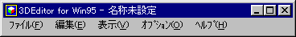
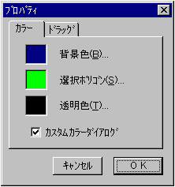
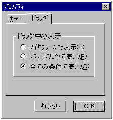
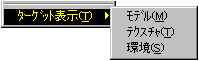
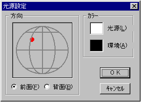
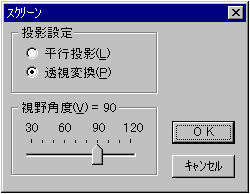
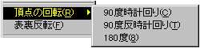
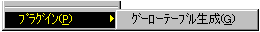

★Graphic Tools Guide
★3D Editorユーザーズマニュアル
★Graphic Tools Guide
★3D Editorユーザーズマニュアル
▲
戻る｜
進む▼
3D Editorユーザーズマニュアル/ウインドウ
■メインウインドウ
- 基本的な編集作業のためのウインドウです。

-
■「ファイル」メニュー
- モデルファイルの入出力等のファイル管理を行います。また、終了等の処理もこのメニューで実行します。
- ◆開く
- 既に保存されているSG3形式のファイルを開きます。ファイルを既に開いている場合は自動的に閉じられます。
- 注 意！
- 「3D Editor」で編集可能なマップは１ファイルのみです。
- ◆保存
- 現在作業中のファイルをSG3形式で保存します。
- ◆別名で保存
- 現在作業中のファイルに名前をつけて、別ファイルとして保存します。
- ◆１〜４
- 最近開いたり、保存したファイルから順番に４ファイルが表示されます。
- ◆終了
- 「3D Editor」を終了します。
■「編集」メニュー
- ポリゴンの拡張選択を行います。また、「3D Editor」を利用する上での作業環境の設定もここで行います。
- ◆元に戻す
- 直前の操作を取り消します。取り消しできない機能もあるので注意が必要です。
- ◆切り取り
- ◆コピー
- ◆貼り付け
- ◆削除
- 現在、使用できません。
- ◆ツール
- 各サブメニューは、ツールボックスのボタンに対応しています。
-
- ◆モデル選択
- 現在選択されているポリゴンを含むモデル全体を、選択します。
- ◆マテリアル選択
- 現在選択されているポリゴンと同じマテリアル情報を持つポリゴン全てを、選択します。
- ◆すべて選択
- 全てのモデルに含まれる全てのポリゴンを選択します。
- ◆選択解除
- 全てのモデルに含まれる全てのポリゴンの選択を解除します。
- ◆プロパティ
- 各種の環境設定を行います。
- 【カラー】
- 各編集作業の表現や機能に割り当てられるカラーを指定します。

- ●背景色
背景色の色を指定します。
- ●選択ポリゴン
選択ポリゴンの表現に使用されるメッシュの色を指定します。
- ●透明色
テクスチャデータ編集時の透明色として扱う色を指定します。
- ●カスタムカラーダイアログ
チェックされた場合、色選択ダイアログはＲＧＢスライダを利用したカスタムダイアログが表示されます。
チェックされなかった場合、Windows標準の色選択ダイアログを表示します。
- 【ドラッグ】
- 回転や移動など、メインウィンドウ上でのマウスドラッグ操作中のモデルの表示方法を選択します。主に、開発マシンの速度差が原因となって起こる操作性の不具合を吸収することを目的として利用します。

- ●ワイヤフレームで表示
ドラッグ中、ワイヤフレームでモデルを表示します。もっとも快適に動作させる方法です。
- ●フラットポリゴンで表示
ドラッグ中、光源計算をしたポリゴン（非テクスチャマップ）でモデルを表示します。若干処理速度は落ちますが、ドラッグ中でも、モデルの表現をある程度保ったまま動作させる方法です。
- ●全ての条件で表示
ドラッグ中も、表示を変化させません。マテリアル情報の内容によって条件は変わりますが、もっとも処理の重い動作方法です。
■「表示」メニュー
- サブウィンドウやツールボックスの表示／非表示を行います。また、「SS Monitor／SS Viewer」に対応した、ターゲット表示処理もここで行います。
- ◆ツールボックス
- ツールボックスを表示／非表示します。
- ◆アトリビュート
- アトリビュートウィンドウを表示／非表示します。
- ◆階層構造
- 階層構造ウィンドウを表示／非表示します。
- ◆テクスチャリスト
- テクスチャリストウィンドウを表示／非表示します。
- ◆ターゲット表示
- 現在作業中のファイルをターゲットに転送／表示します。この機能を利用するためには、事前に「SS Monitor」が起動し、「SS Viewer」が実行されている必要があります。

- ●テクスチャ
テクスチャデータを転送します。
- ●モデル
モデルデータを転送します。
- ※テクスチャマップのデータは、各面のアトリビュートデータのテクスチャ番号情報だけが転送されます。実際に、テクスチャマップを各面に適用するためには、別途、モデルに対応したテクスチャデータを転送する必要があります。
- ●環境
光源の方向・色や環境（アンビエント）色等の環境情報を転送します。
■「オプション」メニュー
- 光源・投影面・カメラ等の3D環境の設定を行います。また、頂点や面に対する特殊な操作も、ここで行います。
- ◆光源設定
- 光源の方向や色を設定します。

- 「方向」
赤丸表示されたコントロールポイントを移動して、光源の方向を指定します。
- ●前面
前面の半球領域を指定します。
- ●背面
背面の半球領域を指定します。
- 「カラー」
光源や環境の色を指定します。
- ●光源
光源の色を指定します。
- ●環境
環境色（アンビエント）を指定します。
- ◆スクリーン設定
- 3D投影面（スクリーン）に関する各種設定を行います。

- 「投影設定」
スクリーンへの投影方法を選択します。
- ●平行投影
奥行き（Ｚ値）を無視して投影します。
- ●透視変換
奥行きに応じて、パースをかけて投影します。通常、こちらを選択します。
- 「視野角度」
- ●スライダ
投影範囲の視線に対する広がりを角度で指定します。「平行投影」を選択した場合には、無効なパラメータです。
- ◆カメラ設定
- デフォルトカメラ（予約されている視点位置）、もしくはカスタムカメラ（ユーザー指定の視点位置）を選択します。
- ◆新規カメラ
- 現在の視点を、サブメニューで選択された番号のカスタムカメラとして、新規に追加します。既に存在するカメラを選択した場合、現在の視点に置き換えられます。
- ◆頂点の回転（ポリゴン選択時のみ）
- 選択ポリゴンを構成している頂点番号の定義順序を変更します。主に、テクスチャデータを変更することなく、テクスチャマッピングの方向を変更したい場合に使用します。三角形ポリゴンにこのメニューを適用すると、保存したデータがＳＧＬ等で利用できなくなる場合があるので、注意が必要です。

- ・90度時計回り
頂点番号の定義を、ポリゴンの表から見て時計回りに90度回転します。
- ・90度反時計回り
頂点番号の定義を、ポリゴンの表から見て反時計回りに90度回転します。
- ・180度
頂点番号の定義を、ポリゴンの表から見て時計回りに180度回転します。
- ◆表裏反転（ポリゴン選択時のみ）
- 選択ポリゴンの法線ベクトルが反対を向くように、頂点番号の定義順序を変更します。テクスチャが適用されていた場合は、アトリビュート情報のテクスチャ反転フラグを操作して、元のイメージを保つようにします。
- ◆プラグイン

- ●グーローテーブル生成
選択ポリゴンのアトリビュート情報にリアルタイムグーロー（光源計算を行うグーローシェーディング）が適用されている場合、固定テーブルを使用するグーローシェーディング（光源計算は行わない）に変更します。グーローテーブルは、現在の光源の色・方向を適用して生成されます。
主にリアルタイムグーローの処理時間（比較的処理に時間がかかる）の緩和を目的として、使用します。
■「ヘルプ」メニュー
- 「3D Editor」の使い方を説明するヘルプファイルを表示します。また、「3D Editor」の情報を表示します。
- ◆目次
- ヘルプファイルの目次を表示します。
- ◆バージョン情報
- 「3D Editor」のバージョン等の情報を表示します。
▲
戻る｜
進む▼
★Graphic Tools Guide
★3D Editorユーザーズマニュアル
Copyright SEGA ENTERPRISES, LTD,. 1997